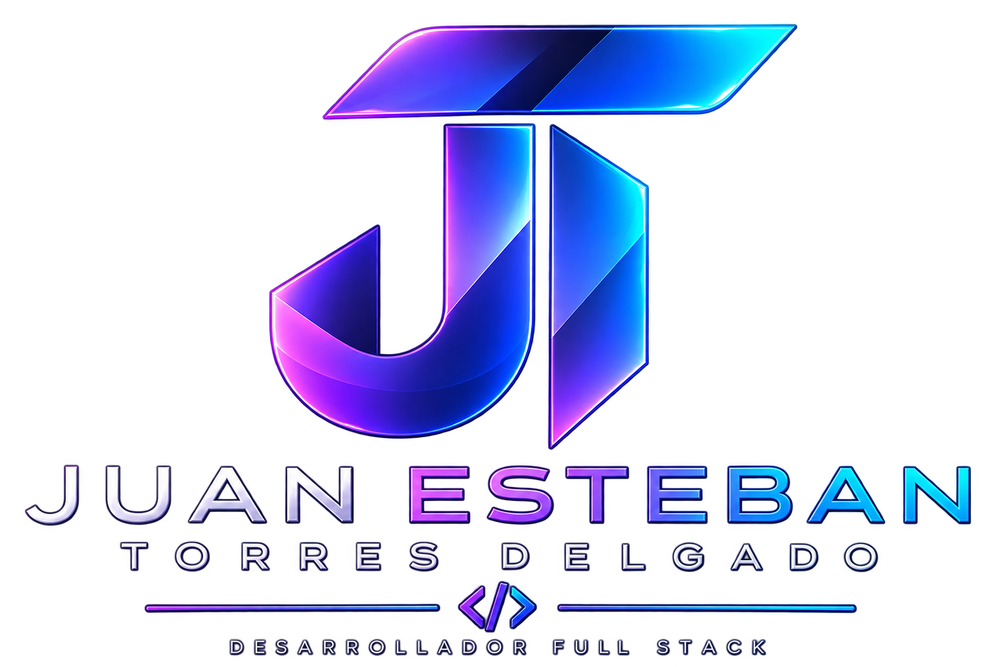
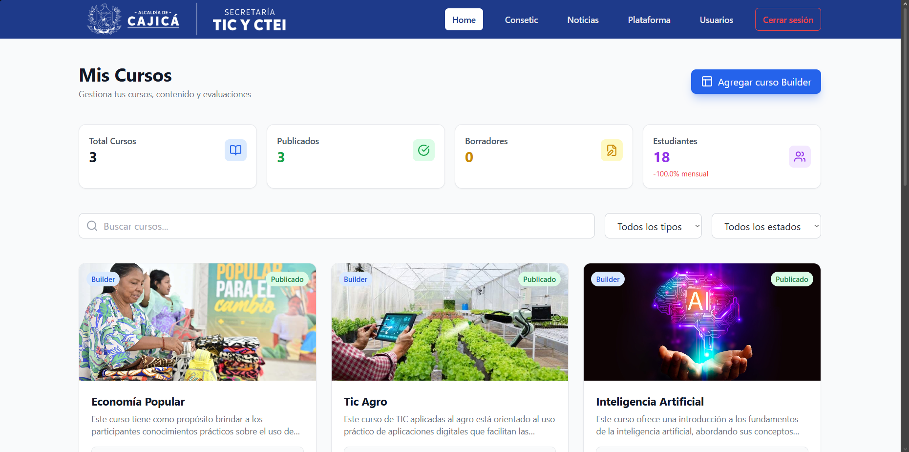
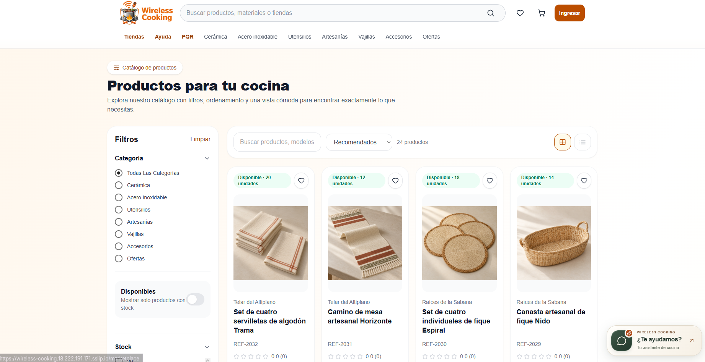
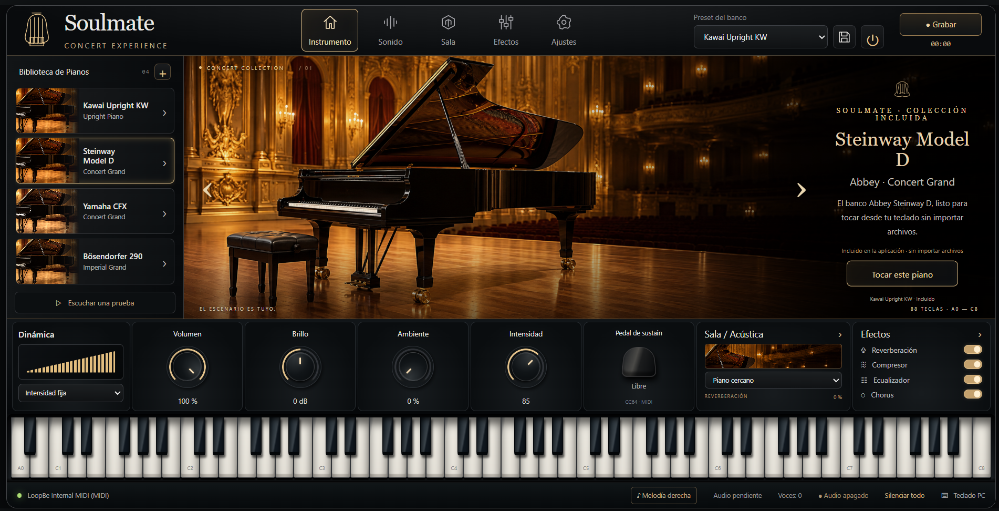
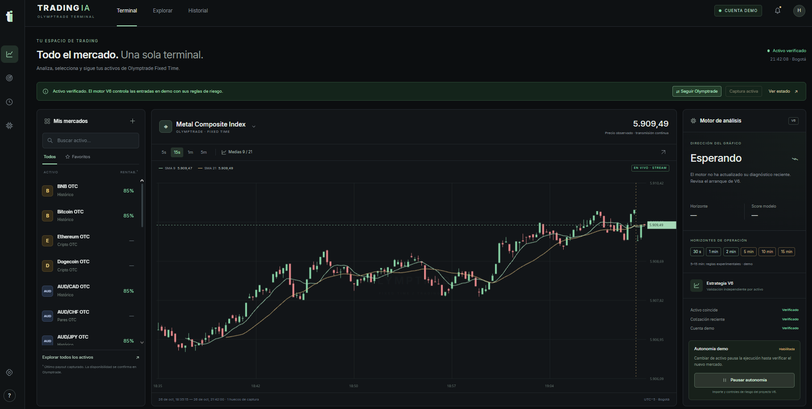

Frontend
⚛ ReactJS JavaScript5 HTML3 CSS≈ Tailwind CSSϟ Vite

Soy Juan Esteban Torres Delgado. Desarrollo aplicaciones web conectando interfaces intuitivas, APIs y datos.
Experiencia profesional, desarrollo académico y proyectos de aplicaciones.

EXPERIENCIA PROFESIONALPlataforma educativa que reúne la gestión de usuarios, cursos y contenidos de aprendizaje. Incluye herramientas para administrar noticias, cargar y reproducir paquetes SCORM de hasta 6 GB y consultar información sobre el uso y progreso de los usuarios.

PROYECTO DE GRADOMi proyecto de grado conecta el desarrollo web con el comercio electrónico de productos de cocina. La plataforma permite explorar un catálogo, buscar y filtrar productos, consultar tiendas y gestionar compras, con una experiencia que integra usuarios, pedidos y pagos en línea.

APLICACIÓN DE ESCRITORIOAplicación para Windows que convierte las notas de un teclado MIDI en sonido de piano mediante bancos de instrumentos integrados. Reúne biblioteca de pianos, controles de volumen y efectos, manejo del pedal y grabación de interpretaciones en WAV, dentro de una misma experiencia musical.
Soy estudiante de décimo semestre de Ingeniería de Software en la Universidad Manuela Beltrán. Tengo experiencia Full Stack en la Alcaldía de Cajicá, desarrollando plataformas educativas y herramientas de administración.
Me apasiona crear aplicaciones innovadoras que conviertan ideas en experiencias útiles. Mis proyectos conectan intereses como la tecnología, la música y la inteligencia artificial, y reflejan mi curiosidad por explorar nuevas formas de resolver problemas.
Disfruto aprender, construir y colaborar con personas que comparten las ganas de dar vida a algo que valga la pena.
Lo que estoy construyendo ahora.

Terminal de análisis de mercados con inteligencia artificial, actualmente en desarrollo. Integra cotizaciones en tiempo real, gráficos de velas, seguimiento de activos e historial en una sola interfaz. El proyecto combina procesamiento de datos, automatización y un motor para evaluar estrategias, con pruebas en cuenta demo para revisar su funcionamiento y seguir mejorando la lógica de análisis.
Herramientas y aprendizajes de mis proyectos web, de audio e inteligencia artificial.
Desarrollo web, audio digital y análisis de datos.
Desarrollo Full Stack para comercio electrónico: interfaces, autenticación, pedidos, integración de pagos y despliegue.
Aplicación de escritorio con entrada MIDI, motor de audio integrado, bancos de sonido, grabación y distribución para Windows.
Desarrollo en curso de herramientas para analizar datos de mercado, automatizar flujos y validar lógica de estrategias en un entorno demo.
Aprender haciendo. Crecer construyendo.
Desarrollo de soluciones que integran frontend y backend, gestión de usuarios y cursos, contenido SCORM e interfaces de administración.
Universidad Manuela Beltrán
Estudiante de décimo semestre. Formación y conocimientos en desarrollo de software, programación orientada a objetos, bases de datos y patrones de diseño.
Educación previa a mis estudios universitarios.
¿Buscas un desarrollador para tu equipo o quieres conversar sobre un proyecto? Me gustaría conocer tu idea y explorar cómo puedo aportar.
Una oportunidad laboral, una entrevista o una conversación sobre tecnología.